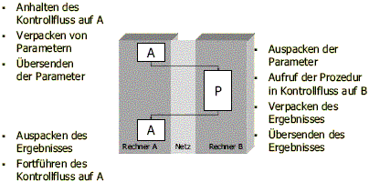

ist ein synchroner Mechanismus, der Kontrollfluss und Daten zwischen zwei Adressräumen über ein schmalbandiges Netz transferiert.
| RPC |
|
| 1. Was ist der Remote Procedure Call? | ||
| ist ein synchroner Mechanismus, der Kontrollfluss und Daten zwischen zwei Adressräumen über ein schmalbandiges Netz transferiert. |
||
| 2. Was synchronisiert sich bei RPC womit? | ||
| der Aufrufer blockiert bis Aufgerufener das Egebnis abliefert | ||
| 3. Nennen Sie fünf Unterschiede zwischen lokalem und entferntem Prozeduraufruf | ||||||||||||||
|
||||||||||||||
| 4. Wie läuft ein RPC ab? | ||
|  | ||
| 5. Was ist ein asynchroner RPC? | ||
| im Gegensatz zum eigentlichen RPC blockiert der Aufrufer nicht bis das Ergebnis abgeliefert wird, sondern holt es später ab. | ||
| 6. Welche Komponenten sind bei einem RPC generell beteiligt? | ||
| |
||
| 7. Was ist ein Stub? | ||
| Ein Stub dient zum ver- und entpacken von Daten zum Transport und verbirgt die komplizierten Details der Kommunikation zwischen Server und Client. |
||
| 8. Was ist eine Schnittstelle? | ||
| lokal: Interaktionspunkt, definiert durch Signaturen entfernt: |
||
| 9. Nennen Sie drei Arten von Bindung zwischen Aufrufer und Aufgerufenem | ||
| |
||
| 10. Was macht ein Trader oder Broker? | ||
| Komponente, die die Server kennt und Referenzen auf sie vermitteln kann . Bsp: Internet: DNS; Java: rmiregistry; CORBA: ORB |
||
| 11. Nennen Sie vier Fehlerquellen die spezifisch für RPC sind. | ||
| 12. Was bedeutet die at-most-once Semantic beim RPC? | ||
| (at-least-once: Mindestens 1 Mal ausführt) |
||